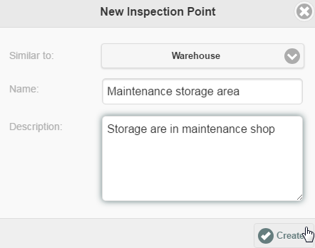
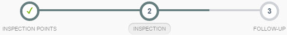

If you need to create new Inspection Points, you can do so from the app when you create the inspection, or while an inspection is in progress.
To add a new Inspection Point for an inspection:
After initiating a new inspection for the facility, click the New Inspection Point button.
Click Create.
The App will copy the selected object to create the new object. The new object will be associated with all of the same inspection questions as the original.

You can now select the new object to include it in an inspection.
To add a new Inspection Point while the inspection is in progress:
On the progress bar, click Step 1, Inspection Points.

You will be returned to the New Inspection page. Add the objects you want to the selected items, as shown above.
Click Save Progress. A new section will be created on the form for each additional Inspection Point and you will be returned to the inspection form.
When you create a new Inspection Point, a notification will be sent to the App Administrator informing them that a new Inspection Point was added to the system. (App Administrators are members of the EIA-Administrators role.)